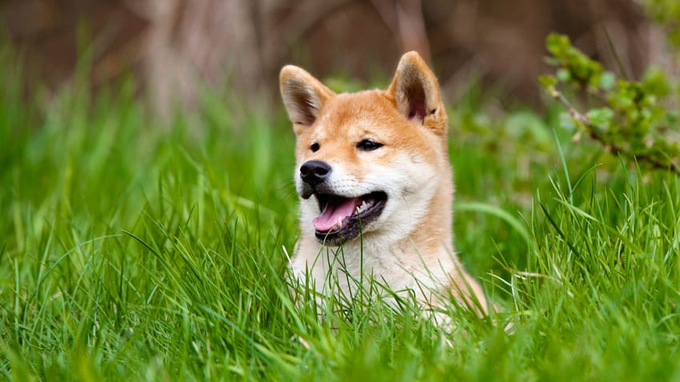

5 Things You Didn't Know About Shiba Inus

Japanese Dog Breed is More than a Cute Face
Sure, they’re cute and look like cuddly bears, but how much do you really know about Shiba Inus?
1. Shiba Inus’ Ancestral Roots Are Really, Really Old
DNA analysis reveals that the Shiba Inu is one of the oldest dog breeds, dating back to the 3rd century BC, part of the Classical era. During this time, the Roman Republic was dominating the world, the Chinese Terracotta Army was being buried in Emperor Qin Shi Huang’s tomb and, along with the introduction of wet-rice agriculture in Japan, an Asian spitz-type of dog was born.
2. First Shiba Inu Import Years in the Making
The first Shiba Inu brought to the United States arrived with an American armed forces family in 1954. That’s more than 2,150 years after it was born in Japan! The breed’s popularity began to grow and, a little over 20 years later, the first Shiba Inu American litter was born in 1979. It is currently ranked as the 46th most popular dog breed by the American Kennel Club.
3. Shiba Inu Goes Down in Modern History
According to the Guinness World Records, one of the world’s oldest-living dogs was a Shiba Inu named Pusuke, who died at age 26 in 2011, three months shy of his 27th birthday. Described as being very active up to his last day, Pusuke passed away five minutes after his owner returned home from a morning walk. The family believes Pusuke waited for her return to take his last breath.
4. Pretending to be Ninja Warriors?
Quick, nimble and alert, the Shiba Inu has been likened to a ninja warrior — making the dog a good escape artist (make sure your Shiba Inu has a collar with tags and a microchip in case he makes a beeline for the great outdoors). A fierce guardian of possessions, Shiba Inus often display territorial behavior; like a three-year-old child, they’ll refuse to share toys. Their fiery nature can be tempered with routine socialization training, which is best started at a young age. Like a ninja, the Shiba Inu is also very loyal, devoted to guarding family members from suspicious strangers.
5. In Good Health
Shiba Inus are generally known to live long, healthy lives. However, the breed is prone to certain conditions for which you should be on the lookout. Some of these include glaucoma, kneecap issues, and hip dysplasia. If you are adopting a Shiba Inu from a breeder, make sure your pup comes with certified health clearances.